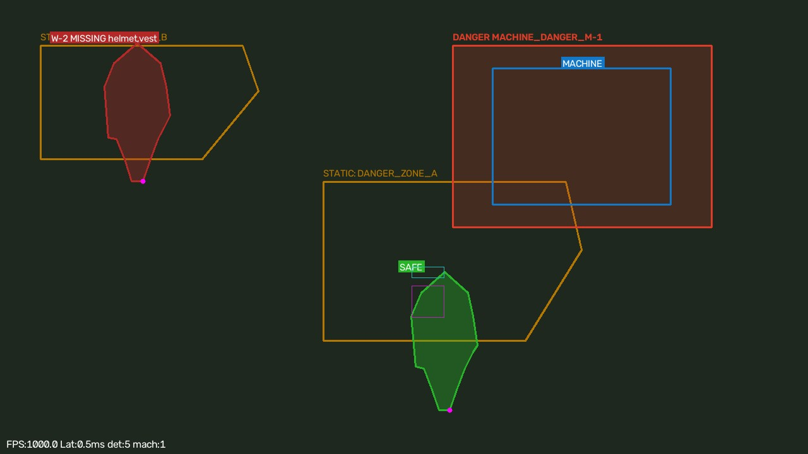
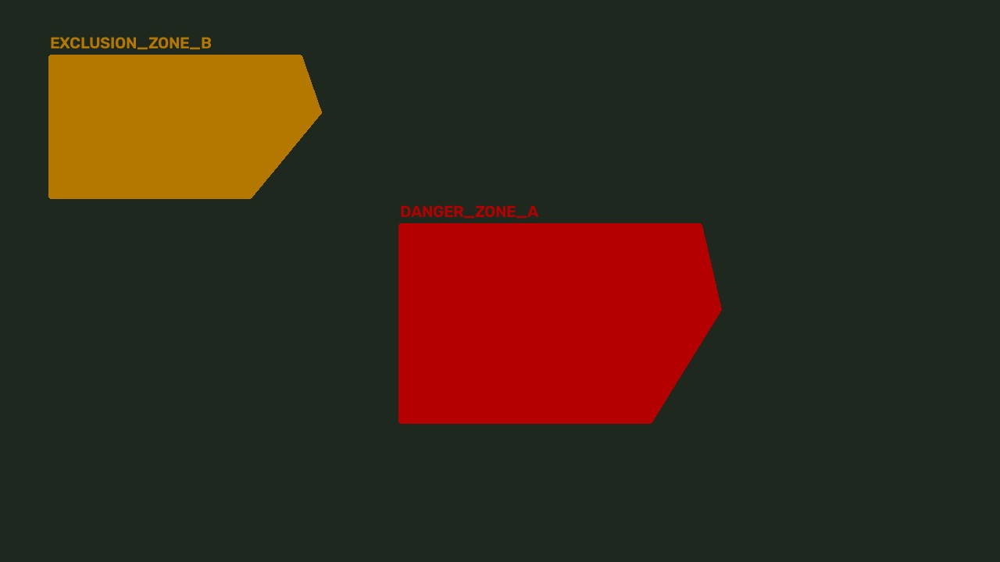
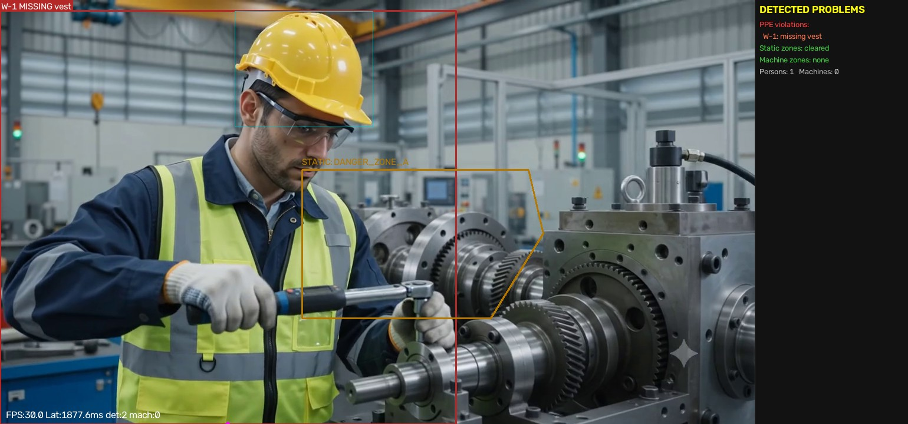
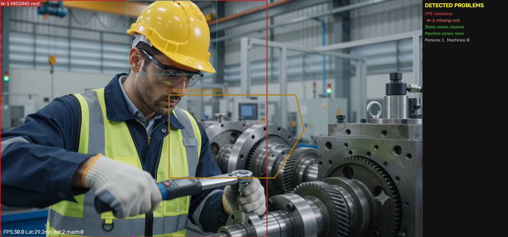
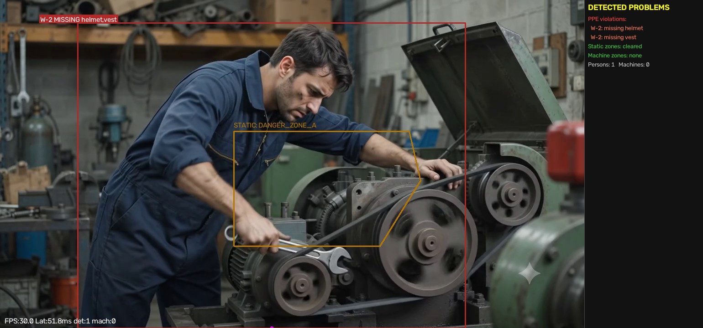
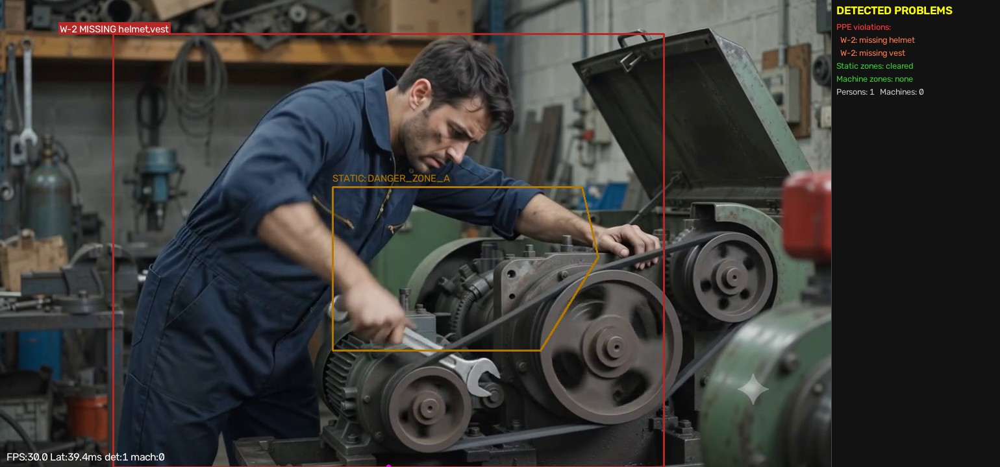
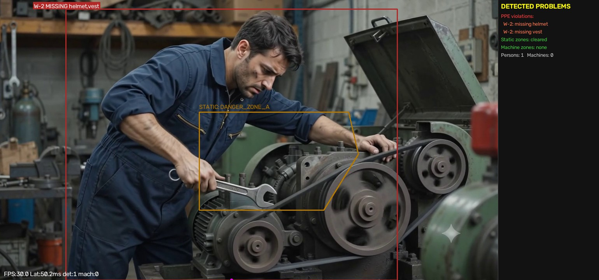
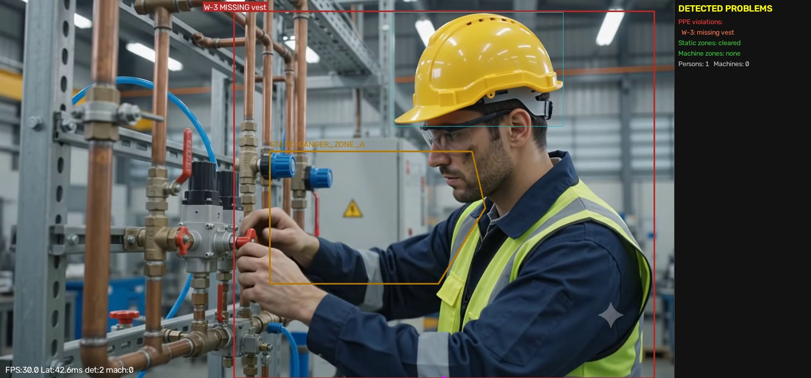

An edge-first, multi-modal safety AI system for industrial facilities. It fuses real-time vision (YOLOv8 / YOLO-World, person segmentation, PPE compliance, polygon geofencing and machine danger zones) with IIoT telemetry (temperature, vibration, toxic gas), anomaly detection, Remaining Useful Life (RUL) estimation, and a FastAPI control plane that trips a PLC E-Stop relay — all with a sub-20ms safety loop, running fully offline.


Open interactive dashboard demo View source on GitHub
Real annotated frames extracted from We_want_the_vedio_of_the_engin.mp4
using the same renderer as the edge node.






python scripts/run_edge.py and open
http://127.0.0.1:8080/edge/video-snapshot locally.